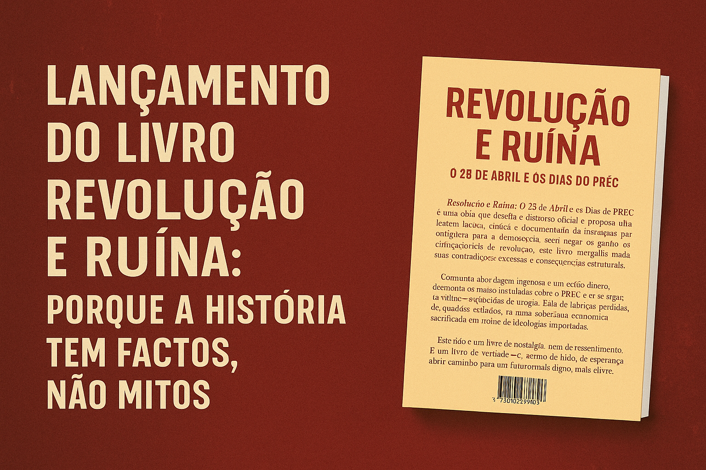

Publicado em 2025-05-12 14:14:54
No meio da névoa que por décadas envolveu o 25 de Abril e os dias do PREC, lançamos hoje um livro que ousa fazer o impensável: olhar de frente os factos, sem véus ideológicos nem reverências partidárias.
"Revolução e Ruína: O 25 de Abril e os Dias do PREC" é mais do que um livro — é um antídoto contra a amnésia seletiva que se instalou nas escolas, nos media e nos discursos oficiais. Num país onde a memória foi domesticada e a história transformada em liturgia, esta obra mergulha no turbilhão dos anos 1974-76 com coragem e lucidez.
Porque os jovens têm o direito — e o dever — de conhecer o que realmente aconteceu.
Porque as narrativas glorificadoras ignoram os desastres económicos, o caos institucional e a destruição da base industrial portuguesa.
Porque a liberdade conquistada não pode ser construída sobre mitos, mas sim sobre verdade.
Neste livro, expomos:
Escrito por Francisco Gonçalves e Augustus Veritas, este livro é também um convite ao debate, à consciência e à reabilitação do espírito crítico. É dedicado às novas gerações — aquelas que, tantas vezes, são deixadas nas sombras de uma história mal contada.
Porque quem não conhece o passado, repete-o.
E quem o aceita sem questionar, vive de joelhos.
O livro está disponível para download gratuito na nossa Biblioteca Digital, livre e gratuita, e com versões PDF e EPUB.
Faça já o seu download.